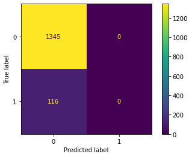
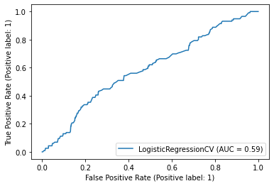

Logistic Regression with multiple predictors
Contents
Logistic Regression with multiple predictors#
Setup#
import pandas as pd
import altair as alt
from sklearn.model_selection import train_test_split
from sklearn.linear_model import LogisticRegressionCV
from sklearn.metrics import ConfusionMatrixDisplay
from sklearn.metrics import classification_report
from sklearn.metrics import RocCurveDisplay
Import data#
df = pd.read_csv('https://raw.githubusercontent.com/kirenz/datasets/master/resume.csv')
df = df[['received_callback', 'honors', 'job_city', 'years_experience', 'military', 'has_email_address', 'race', 'gender', 'college_degree']]
Data structure#
df
| received_callback | honors | job_city | years_experience | military | has_email_address | race | gender | college_degree | |
|---|---|---|---|---|---|---|---|---|---|
| 0 | 0 | 0 | Chicago | 6 | 0 | 0 | white | f | 1 |
| 1 | 0 | 0 | Chicago | 6 | 1 | 1 | white | f | 0 |
| 2 | 0 | 0 | Chicago | 6 | 0 | 0 | black | f | 1 |
| 3 | 0 | 0 | Chicago | 6 | 0 | 1 | black | f | 0 |
| 4 | 0 | 0 | Chicago | 22 | 0 | 1 | white | f | 0 |
| ... | ... | ... | ... | ... | ... | ... | ... | ... | ... |
| 4865 | 0 | 0 | Boston | 1 | 0 | 0 | black | f | 0 |
| 4866 | 0 | 0 | Boston | 6 | 0 | 0 | black | f | 1 |
| 4867 | 0 | 0 | Boston | 8 | 0 | 1 | white | m | 1 |
| 4868 | 0 | 0 | Boston | 2 | 1 | 1 | black | f | 1 |
| 4869 | 0 | 0 | Boston | 7 | 0 | 0 | white | f | 1 |
4870 rows × 9 columns
df['received_callback'].value_counts()
0 4478
1 392
Name: received_callback, dtype: int64
df.info()
<class 'pandas.core.frame.DataFrame'>
RangeIndex: 4870 entries, 0 to 4869
Data columns (total 9 columns):
# Column Non-Null Count Dtype
--- ------ -------------- -----
0 received_callback 4870 non-null int64
1 honors 4870 non-null int64
2 job_city 4870 non-null object
3 years_experience 4870 non-null int64
4 military 4870 non-null int64
5 has_email_address 4870 non-null int64
6 race 4870 non-null object
7 gender 4870 non-null object
8 college_degree 4870 non-null int64
dtypes: int64(6), object(3)
memory usage: 342.5+ KB
Prepare data for scikit-learn model:
df = pd.get_dummies(df, prefix = ['job_city', 'race', 'gender'])
df
| received_callback | honors | years_experience | military | has_email_address | college_degree | job_city_Boston | job_city_Chicago | race_black | race_white | gender_f | gender_m | |
|---|---|---|---|---|---|---|---|---|---|---|---|---|
| 0 | 0 | 0 | 6 | 0 | 0 | 1 | 0 | 1 | 0 | 1 | 1 | 0 |
| 1 | 0 | 0 | 6 | 1 | 1 | 0 | 0 | 1 | 0 | 1 | 1 | 0 |
| 2 | 0 | 0 | 6 | 0 | 0 | 1 | 0 | 1 | 1 | 0 | 1 | 0 |
| 3 | 0 | 0 | 6 | 0 | 1 | 0 | 0 | 1 | 1 | 0 | 1 | 0 |
| 4 | 0 | 0 | 22 | 0 | 1 | 0 | 0 | 1 | 0 | 1 | 1 | 0 |
| ... | ... | ... | ... | ... | ... | ... | ... | ... | ... | ... | ... | ... |
| 4865 | 0 | 0 | 1 | 0 | 0 | 0 | 1 | 0 | 1 | 0 | 1 | 0 |
| 4866 | 0 | 0 | 6 | 0 | 0 | 1 | 1 | 0 | 1 | 0 | 1 | 0 |
| 4867 | 0 | 0 | 8 | 0 | 1 | 1 | 1 | 0 | 0 | 1 | 0 | 1 |
| 4868 | 0 | 0 | 2 | 1 | 1 | 1 | 1 | 0 | 1 | 0 | 1 | 0 |
| 4869 | 0 | 0 | 7 | 0 | 0 | 1 | 1 | 0 | 0 | 1 | 1 | 0 |
4870 rows × 12 columns
Variable lists#
# Prepare the data
y_label = 'received_callback'
features = ["job_city_Chicago",
"college_degree",
"years_experience",
"honors",
"military",
"has_email_address",
"race_white",
"gender_m"
]
X = df[features]
y = df[y_label]
Data split#
X_train, X_test, y_train, y_test = train_test_split(X, y, test_size=0.3, random_state = 1)
Model#
Select model#
clf = LogisticRegressionCV(cv=5, random_state=0)
Training#
clf.fit(X_train, y_train)
LogisticRegressionCV(cv=5, random_state=0)In a Jupyter environment, please rerun this cell to show the HTML representation or trust the notebook.
On GitHub, the HTML representation is unable to render, please try loading this page with nbviewer.org.
LogisticRegressionCV(cv=5, random_state=0)
clf.get_params
<bound method BaseEstimator.get_params of LogisticRegressionCV(cv=5, random_state=0)>
clf.score(X_train, y_train)
0.9190378410090936
Coefficients#
clf.intercept_
array([-2.56291775])
clf.coef_
array([[-0.00195985, -0.00044132, 0.01672936, 0.00123163, -0.00080931,
0.00015201, 0.00288716, -0.00046124]])
Evaluation on test set#
y_pred = clf.predict(X_test)
# Return the mean accuracy on the given test data and labels:
clf.score(X_test, y_test)
0.920602327173169
Evaluation on test set#
# Return the mean accuracy on the given test data and labels:
clf.score(X_test, y_test)
0.920602327173169
Confusion matrix#
ConfusionMatrixDisplay.from_estimator(clf, X_test, y_test);

Classification report#
y_pred = clf.predict(X_test)
print(classification_report(y_test, y_pred, target_names=['0', '1'], zero_division=0))
precision recall f1-score support
0 0.92 1.00 0.96 1345
1 0.00 0.00 0.00 116
accuracy 0.92 1461
macro avg 0.46 0.50 0.48 1461
weighted avg 0.85 0.92 0.88 1461
ROC Curve#
RocCurveDisplay.from_estimator(clf, X_test, y_test);

AUC Score#
roc_auc_score(y_test, clf.decision_function(X_test))
0.5881137033713626
Option 2 to obtain AUC:
y_score = clf.predict_proba(X_test)[:, 1]
roc_auc_score(y_test, y_score)
0.5881137033713626
Change threshold#
Use specific threshold
# obtain probabilities
pred_proba = clf.predict_proba(X_test)
# set threshold to 0.25
df_25 = pd.DataFrame({'y_pred': pred_proba[:,1] > .25})
ConfusionMatrixDisplay.from_predictions(y_test, df_25['y_pred']);

Classification report#
print(classification_report(y_test, df_25['y_pred'], target_names=['0', '1'], zero_division=0))
precision recall f1-score support
0 0.92 1.00 0.96 1345
1 0.00 0.00 0.00 116
accuracy 0.92 1461
macro avg 0.46 0.50 0.48 1461
weighted avg 0.85 0.92 0.88 1461